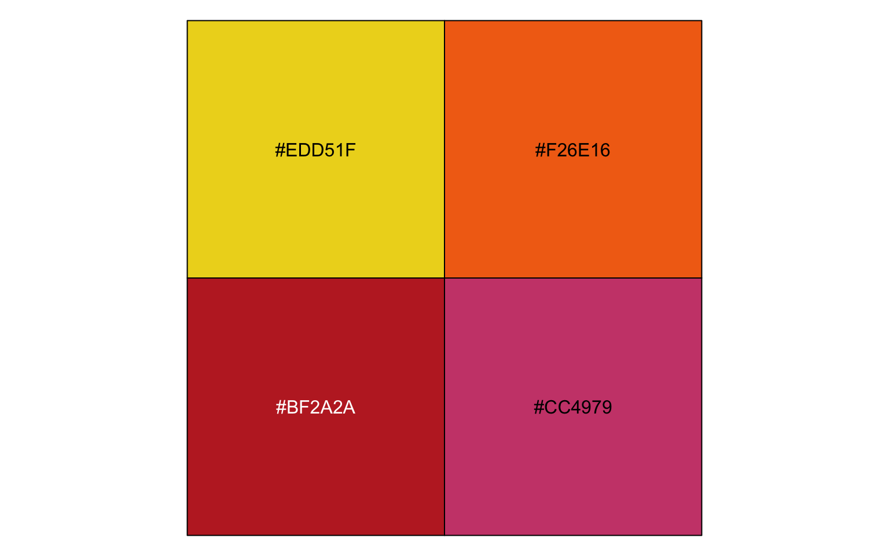
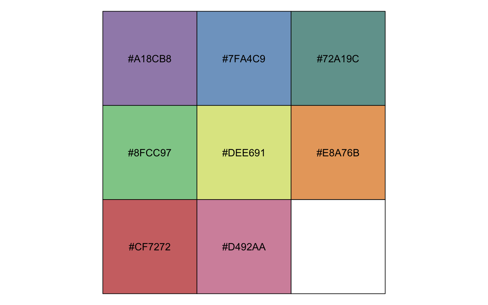
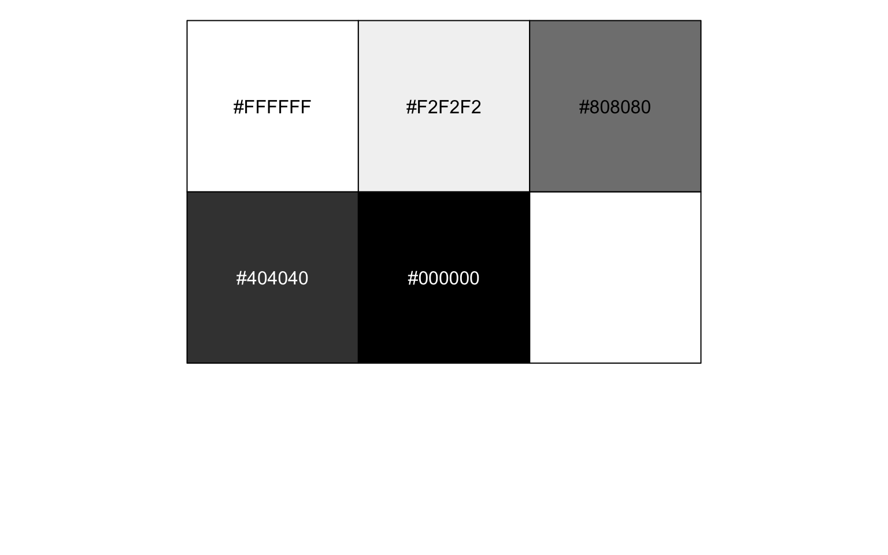
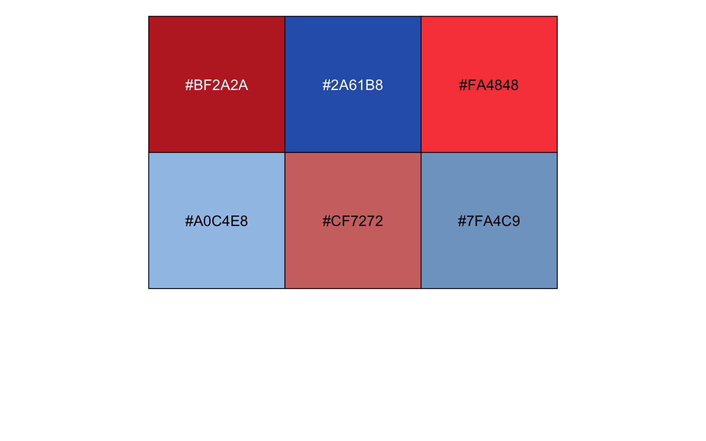

Examples for using `theme_mengbo` when generating ggplots
Mengbo Li
Bioinformatics Division, WEHI2022-07-16
ggthemeML.RmdColor palettes
Available color palettes so far:
names(ggthemeML:::mengbo_palettes)
[1] "main" "cool" "hot" "pastel" "light" "grey" "opposite"
show_col(mengbo_pal("main")(8), ncol = 8)
show_col(mengbo_pal("cool")(4), ncol = 4)
show_col(mengbo_pal("hot")(4), ncol = 4)
show_col(mengbo_pal("pastel")(8), ncol = 8)
show_col(mengbo_pal("light")(8), ncol = 8)
show_col(mengbo_pal("grey")(5), ncol = 5)
show_col(mengbo_pal("opposite")(6), ncol = 6)
show_col(mengbo_pal("main")(16))Discrete colour examples
My own ggplot theme modified based on the default ggplot theme
(theme_grey()). Modifications include removing the minor
grids, bigger axis texts, empty panel and legend background and so
on.
Default
mtcars2 <- within(mtcars, {
vs <- factor(vs, labels = c("V-shaped", "Straight"))
am <- factor(am, labels = c("Automatic", "Manual"))
cyl <- factor(cyl)
gear <- factor(gear)
})
p1 <- ggplot(mtcars2) + geom_point(aes(x = wt, y = mpg, colour = gear)) +
labs(title = "Fuel economy declines as weight increases",
subtitle = "(1973-74)", caption = "Data from the 1974 Motor Trend US magazine.",
tag = "Figure 1", x = "Weight (1000 lbs)", y = "Fuel economy (mpg)",
colour = "Gears")
p1 + theme_mengbo()
p1 + facet_wrap(~gear) + theme_mengbo()With my color palettes:
p1 + scale_color_mengbo("main") + theme_mengbo()Framed figure panel
p1 + theme_mengbo(clean_background = FALSE)
p1 + facet_wrap(~gear) + theme_mengbo(clean_background = FALSE)Continuous color examples
ggplot(iris, aes(Sepal.Width, Sepal.Length, color = Sepal.Length)) +
geom_point(size = 4) + scale_color_mengbo("main", discrete = FALSE) +
theme_mengbo()Session information
sessionInfo()
R version 4.2.1 (2022-06-23)
Platform: x86_64-apple-darwin17.0 (64-bit)
Running under: macOS Big Sur ... 10.16
Matrix products: default
BLAS: /Library/Frameworks/R.framework/Versions/4.2/Resources/lib/libRblas.0.dylib
LAPACK: /Library/Frameworks/R.framework/Versions/4.2/Resources/lib/libRlapack.dylib
locale:
[1] en_AU.UTF-8/en_AU.UTF-8/en_AU.UTF-8/C/en_AU.UTF-8/en_AU.UTF-8
attached base packages:
[1] stats graphics grDevices utils datasets methods base
other attached packages:
[1] scales_1.2.0 ggthemeML_1.0.0 ggplot2_3.3.6 BiocStyle_2.24.0
loaded via a namespace (and not attached):
[1] tidyselect_1.1.2 xfun_0.31 bslib_0.3.1 purrr_0.3.4
[5] colorspace_2.0-3 vctrs_0.4.1 generics_0.1.3 htmltools_0.5.2
[9] yaml_2.3.5 utf8_1.2.2 rlang_1.0.4 pkgdown_2.0.5
[13] jquerylib_0.1.4 pillar_1.7.0 glue_1.6.2 withr_2.5.0
[17] DBI_1.1.3 lifecycle_1.0.1 stringr_1.4.0 munsell_0.5.0
[21] gtable_0.3.0 ragg_1.2.2 memoise_2.0.1 evaluate_0.15
[25] labeling_0.4.2 knitr_1.39 fastmap_1.1.0 fansi_1.0.3
[29] highr_0.9 formatR_1.12 BiocManager_1.30.18 cachem_1.0.6
[33] desc_1.4.1 jsonlite_1.8.0 farver_2.1.1 systemfonts_1.0.4
[37] fs_1.5.2 textshaping_0.3.6 digest_0.6.29 stringi_1.7.8
[41] bookdown_0.27 dplyr_1.0.9 grid_4.2.1 rprojroot_2.0.3
[45] cli_3.3.0 tools_4.2.1 magrittr_2.0.3 sass_0.4.1
[49] tibble_3.1.7 crayon_1.5.1 pkgconfig_2.0.3 ellipsis_0.3.2
[53] assertthat_0.2.1 rmarkdown_2.14 rstudioapi_0.13 R6_2.5.1
[57] compiler_4.2.1